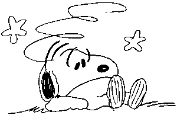

Fifty clicks from Paris, small decaying chateaux squat at the end of Poplar-lined drives. Only intricate roofs and partially hidden turrets betray their presence. Tiny villages sleep away the day, old folk dozing beneath blazes of flowers, which seem to grow from the walls of every house. An hour away from the tourist throngs at Notre Dame , a corner of story-book France passes time under a fresh spring sky. This is paradise. Paradise with rocks.
Fontainbleau was a special place for many, long before I ever went. An inspiration for the French Impressionists, a hiding place for the French resistance and , in happier times, the source of a thousand climbing photos, which I would pour over intently throughout the rain lashed British winters. It was a place to dream about and promise myself; one day.
Fontainbleau is also the home of the great French climbers. Jacky Godoffe, Pierre Alain, Marc and Antoine le Menestrel. Unheard of in Britain, but to those who ate, slept and drank climbing these were heroes, legends. Piere Alain invented the rock shoe. And these names invoked their climbs. Short, beautiful problems with enticing names. In Britain, our problems are given dry, factual names; Jerry's Traverse, Ollies Roof, the long traverse. But the names at Font; Alta, Carnage, L'abbé Resina, 13th Labour of Hercules, La Balance and L'Abbatoir. Magic.
So when I met Marc le Menestrel at Stanage, and he invited me over to 'Bleau, I had my train booked the next day. A week later I was walking along the evening streets of Paris, courtesy of a free ticket offer in the Times. I had only one problem. Marc was away until Thursday , and I hadn't arranged to meet anyone out there. When I reached the campsite though, courtesy of some obliging clubbers on their way home from Paris, I was lucky enough to find Adam and his friend James there, and they were expecting me. Adam Wainwright is the brother of my climbing partner back home. Famous for his Big Wall exploits, he had come to Fontainbleau in search of something a little less serious. Adam also had a car, and didn't seem to mind me hanging around too much. This was indeed a result.
From the start the trip was a laid back affair. Mornings were thankfully a gentle routine of brewing up and reading. Adam is a hippy, and drank Barleycup. James and I found Tea was fine. When it was sunny we went climbing, and when it rained, we didn't. Sometimes we would go into Fontainbleau and look at the castle, as well as sampling some of the fine cakes shops which could be found on every street.
One such rainy day, very soon after I arrived, we picked up two hitchhikers. Eva and Agnèska were Polish and working as Au Pairs in the town. They were also very pretty, and were going into Paris. with no climbing in the foreseeable future we accepted this admirable recompense and drove them into the centre. It was a great day, rain shimmering on the rooftops of Paris. It was a day full of questions, confused conversations and metro journeys. We meet their friends at L'Hôtel de Ville, and drank beer outside the Pompidou centre. An evening spent watching the traffic race through the Place de Concorde was rounded off with drinks in the Chesterfield, where we joined the Scottish Rugby fans who had just seen their team routed by an on form French side, and were drowning their sorrows in style.
Eva and Agnèska were to become to permanent fixtures as the week rolled on. James and Adam cooked them a Mexican, and in return they showed us the best night spots. Later, when Marc invited us to dinner, we went with dates. The feminine influences were notable around the campsite too. All week we had watched French families walk into the forest at some unearthly hour of the morning and return, chattering and carrying great baskets of flowers. So when a forestry official left the car park barrier open, Adam drove into the forest, and returned with a boot full of daffodils, to "brighten the tent up". Unfortunately, by the time he had returned, the gate had been locked closed. Whilst James and I confronted the horror of losing our transport to the crags, Adam revealed a "skill with locks", and the car was rescued.
Amazingly, we even found time to go climbing. The bouldering is incredible. So addictive, enough was always too much, and skin abuse was high. It's hard to adequately describe the magic of the place, always finding new boulders, dappled in the evening light and rough to the touch. The boulders look organic, as if they've grown out of the forest floor, topped with brain like patterns and sometimes faced with a patina of marble, where the compressed base has been rolled to feel the climbers hands. Wild boar and deer are seen in the forest, the boar leave huge areas of ground in turmoil as they root for truffles.
Stu in bouldering heaven, Fontainbleau
Photo: Stu Littlefair
Variety is the real treasure of Fontainbleau. Bas Cuvier, steeped in history and unbelievably popular. The great classics are found here. Trois Pignons, baking in the sunshine, huge boulders in surreal, vast plains of sand. The stunning views from the ridge at Aprémont and the beautiful, leafy Isatis. Bouldering is all about saturation of the senses and Fontainbleau is it's Avatar. At Aprémont we climbed all day on slabs, cracks, offwidths, roofs and walls whilst all the while the sound of bongos could just be heard from the other side of the ridge and the valley swept down towards the Seine on our left.
And I climbed well! The French locals adopted me as one of their own and showed me around. They showed me the classics and the newly developed boulders. I climbed La Balance (Font 7c+/8a) on my third attempt and flashed Alta (Font 7c/7c+, about French 8b); classic problems I had known for years from photos pinned on my wall at home. I also put up a new problem, one of the few English climbers ever to do so. Hidden behind Isatis was a leaning wall covered in tiny, flat holds. I climbed delicately up these until I could go no further, and leapt to the top. It doesn't have a name yet, I asked Marc to give it one.
Bouldering is a blend of the specifics and atmosphere. There is a forest near Paris where I found absorbing climbing, pretty towns, fairy tale castles and friendly locals. Rarely can you find a place to call home, to find one in .html land is special indeed.
See you in 'Bleau, sometime.

6a: By Paul Palfreyman